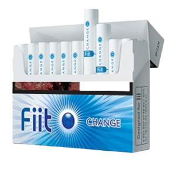

|

체인지 박하맛 멘솔 |

체인지업 히츠 블루와 히츠 그린 사이에 있는 풍선껌 맛 멘솔. 체인지보다 부드럽고 깊다. 아이코스에 비해 찐 옥수수향이 덜 나면서도 볼을 터트리지 않으면 예열 직후 혹은 중간부터 약간 거친 빵 껍질 맛이 나다가 구수하게 옥수수 수염차가 된다. 볼을 터트리면 뭔가 매우 익숙한 단 향이 난다. |

매치 가열 전에는 요구르트 비슷한 향기가 나지만 가열하고 단 한 모금이면 사라진다. 물론 멘솔을 좋아하지 않는 사람이라면 매치가 사실상 유일한 선택지이고, 꽤나 구수하게 필 수 있는 제품이다. |

스파키
향은 살구 향이 난다고 하지만 롯데 쥬시후레쉬나 스피아민트 껌 향이 난다. 볼을 깨나 안 깨나 가향이 되어서 가향 담배 특유의 껄끄러움이
느껴진다. 히츠 퍼플과 맛이
비슷하다고
보면
된다.
|

체인지톡 2018년 9월에 출시된 담배맛은 오렌지 맛. 볼을 터트리지 않으면 체인지 업과 비슷한 맛이 나고 터뜨리면 오렌지 맛이 난다고 하지만 한라봉에 더 가까운 맛이 난다. 감귤초콜릿이나 한라봉초콜릿 맛이라고 생각하면 된다. |

쿨샷 스파키와 같이 기본적으로 멘솔이 들어가 있고 맛은 파워에이드와 블루 하와이를 섞은 맛이다. 판매사 말에 따르면 구아바 맛이라고 한다. 스파키보단 끝맛이 깔끔하고 단맛도 심한 편이 아니라 괜찮은 편이다. |

골든파이브 매치 이후 오랜만에 출시된 볼이 없는 담배. 파이프 담배 맛을 노렸다는데, 크게 느껴지진 않는다. 그냥 핏 체인지에서 캡슐 뺀 맛이라고 보면 된다. |

체인지w KT&G에 따르면 독특하고 이국적인 맛과 시원함을 동시에 경험할 수 있으며, 포도향이 가향되어 볼 캡슐을 터뜨리면 더 강한 포도향을 맛볼 수 있다. |

아이싱 2020년 2월 출시된 새로운 Fiit 스틱. 시원하고 상쾌한 멘솔향이 특징이다. 다른 제품들보다는 균형잡힌 멘솔에 역한 맛도 덜해 시원한 멘솔을 좋아하는 사람들한텐 평이 좋은편 |

체인지큐 여태 나왔던 궐련과 다르게 적당한 달콤함과 레몬향이 매우 이상적이였던 궐련. 레몬향이 약간 에프킬라와 레모나 향을 머금고 있어 역한 경우도 있다. 하지만 여태 내놨던 궐련에 비해서는 맛을 매우잘지켰고. 딱봐도 이건 레몬라임향이다 느낄수있는정도 |

아이시스트 현존 궐련중 가장 시원한 멘솔향이 탑재되어있다. 물론 핏에 사용되는 멘솔향이 고정적이다. (체인지 멘솔향) 멘솔을 좋아하는 사람이라면 한번쯤은 펴볼만한 가치가 있는 궐련 |